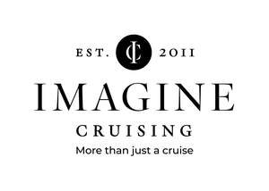
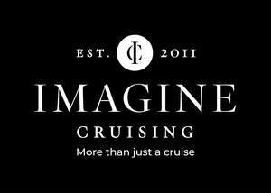

Trade Mark Journal No.2025/017 25 April 2025
UK00004164725 24 February 2025 (39,43)
Mark 1
Mark 2

Mark 3

- Class 39
- Tour operator services; Tour operator services for cruise holidays; Tour operator services for leisure holidays; Arranging of holidays; Arranging of cruise holidays; Arranging business travel; Travel agency services for travel by sea; Arranging of holiday transport; Transport of travellers; Arranging and provision of tours and excursions; Arranging and conducting of tours and sightseeing; Sightseeing [tourism]; Ticket booking services for travel; Tour conducting or escorting; Travel agency; Travel agency and booking services; Travel agency services; Travel agency services for arranging holiday travel; Travel agency services for arranging holiday cruises; Travel agency services for making reservations and bookings for transportation; Travel and transport information and advisory services; Travel and transport reservation services; cruise ship services; guided tours of an ocean liner; escorting of travellers.
- Class 43
- Travel agency services for booking accommodation; Booking of accommodation for travellers; Holiday accommodation services; Accommodation services for travellers; Arrangement of accommodation for travellers; Provision of accommodation for travellers; Provision of temporary accommodation; Services for providing food and drink; hospitality services (provision of food and drink and accommodation); catering services; boarding for animals; child care services; services for restaurants, coffee shops, cafes, snack bars, bars, nightclubs and cocktail lounges.
Imagine Cruising Limited
Representative: HGF Limited